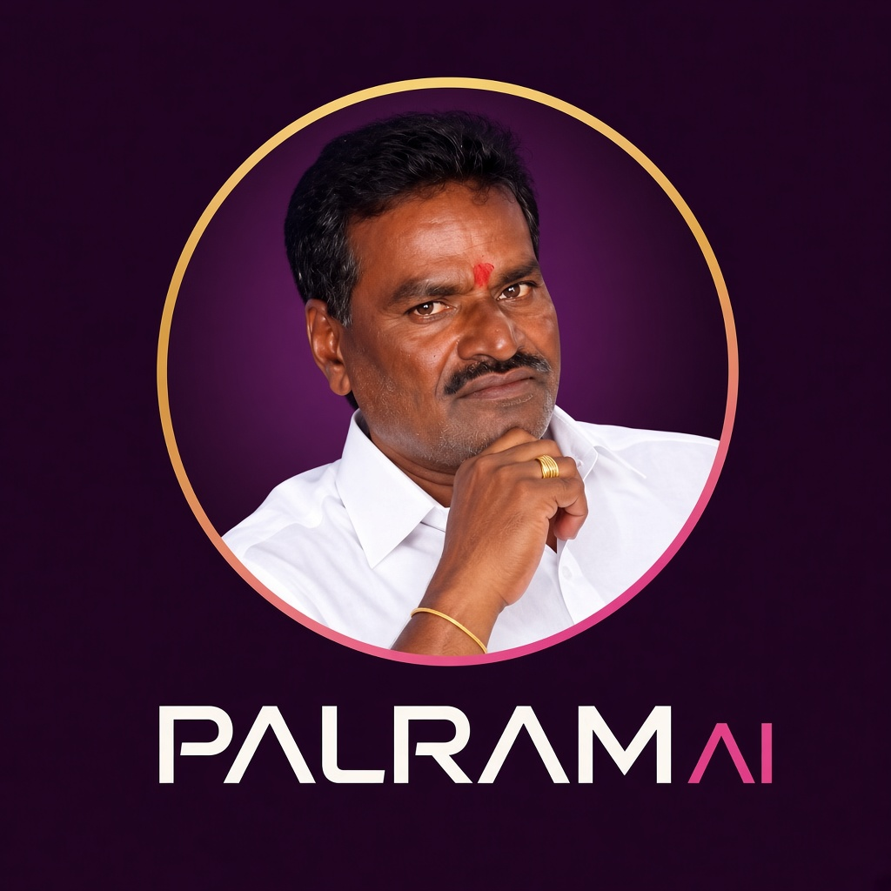
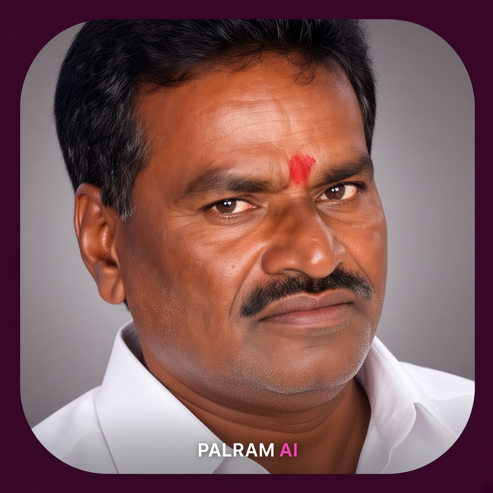
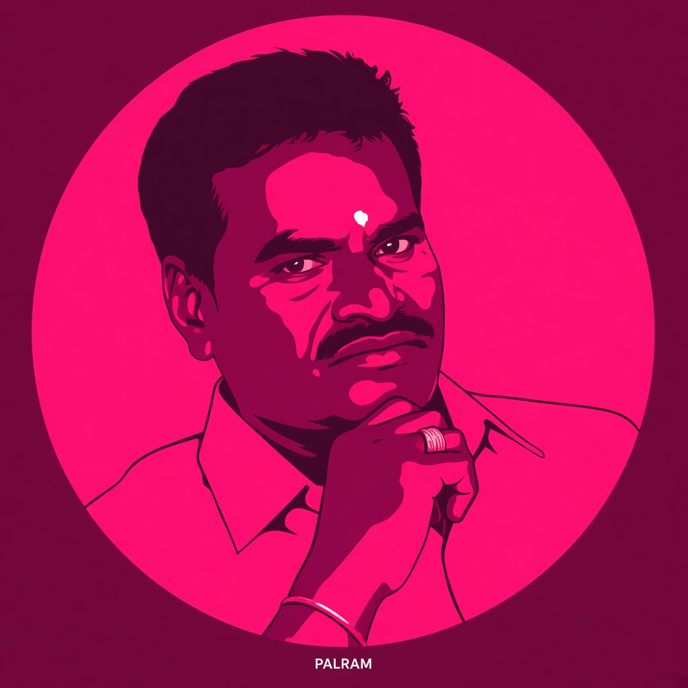
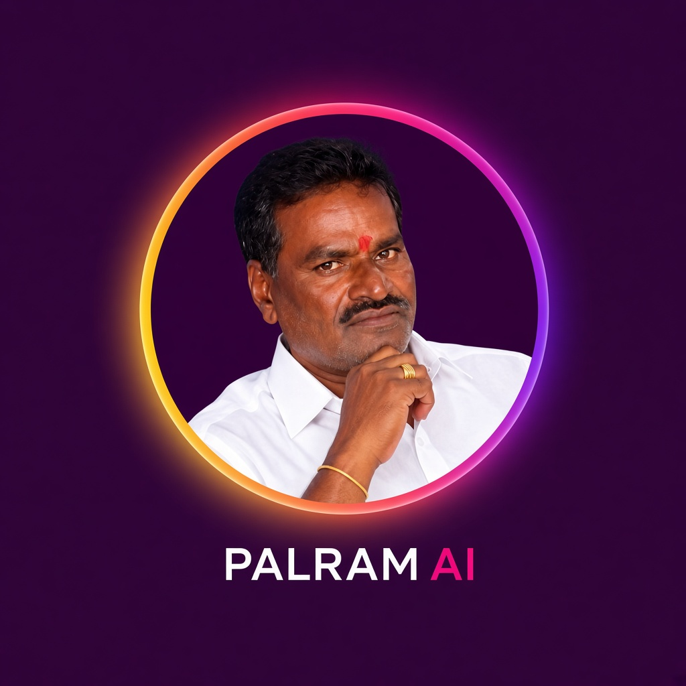
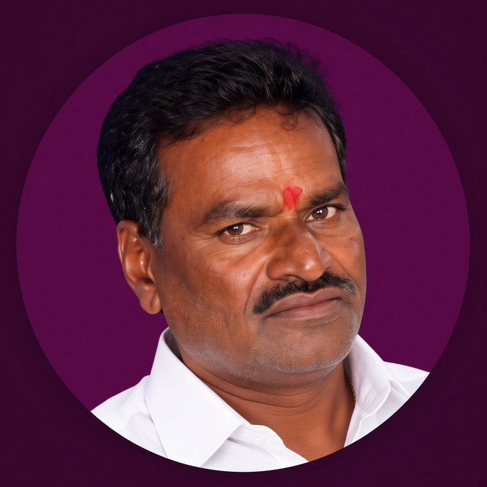

PALRAMAI
A constructed P with one pink bar in the counter. Reads as a company, not a diagram. Strongest favicon of the set.
R5, the wordmark, is now the live logo. The other marks stay here if you want to switch.

A constructed P with one pink bar in the counter. Reads as a company, not a diagram. Strongest favicon of the set.

An arch with a pink keystone. Architectural, quiet, and about a system you can enter. Less “startup icon,” more studio.

The A from PALRAM, with the crossbar in signal pink. One letter, easy to own, still clear at tab size.

A ring, a P, and one pink node. Fits proposals, invoices and the about page. The ring is heavier so it survives a favicon.

Live. Header, loader and social preview use this wordmark: PALRAM, a short pink rule, and AI in signal pink.
Reply with P1 to P6 only if you want the photograph in the mark. The geometric set is still at the bottom.

Classic circular badge. The photograph sits inside a gold–pink ring, with PALRAM set underneath. Strong for letterheads, certificates and about pages.

The face fills a rounded square, like an app icon. Best if the mark should sit next to product tiles and social avatars.

The photograph reduced to plum and signal pink. Most graphic, most on-brand with the site colour. Works even when printed small.
The original engraved mark, with only the hand taken out. Same face, same ring, same PALRAM lettering.

Photographic portrait with the site’s yellow–orange–pink–purple around the edge. The founder mark and the Instagram colour field in one piece.

No letters in the image. The circle is the mark; PALRAM sits beside it in type, the way the header already works. Cleanest at favicon size.
Reply with 01–06 only if you want to leave the portrait direction and go back to a letter or icon mark.

This was the live mark. The site now uses the R5 wordmark.
A solid P, not an outline. The counter holds a pink peak — the A, the build, the signal. Works as a favicon because the silhouette is a letter, not a ring.
App-icon language. A rounded square, a heavy P, one live pink core. Looks finished next to Slack, Linear, Notion. Best if you want PALRAM to feel like a product, not a diagram.
The site’s yellow–orange–pink–purple in one tile, with a dark P cut out of it. Loudest option. Strong on social, tabs and mobile. Use if the colour field on the site should also live in the mark.
Same P, rebuilt with weight and one pink node instead of a full orbit. Quiet, expensive, still about a live system. Closest cousin to the current idea, without looking unfinished.
The earlier three-bar mark. Kept here so it can be compared with the wordmark.
P and A drawn as one letter. The pink bar is the only colour. Feels like a law firm or an architecture studio that also ships software — serious, ownable, hard to copy with a generic icon pack.